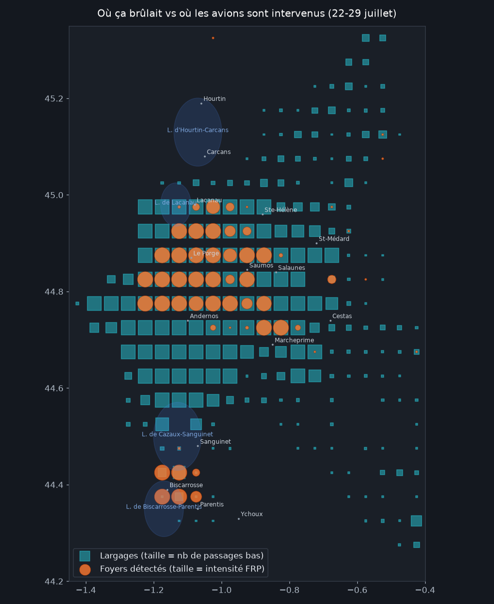
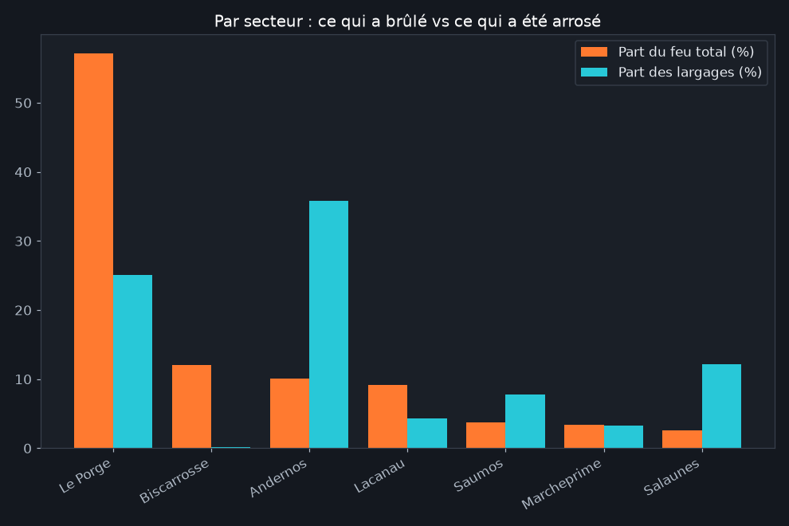
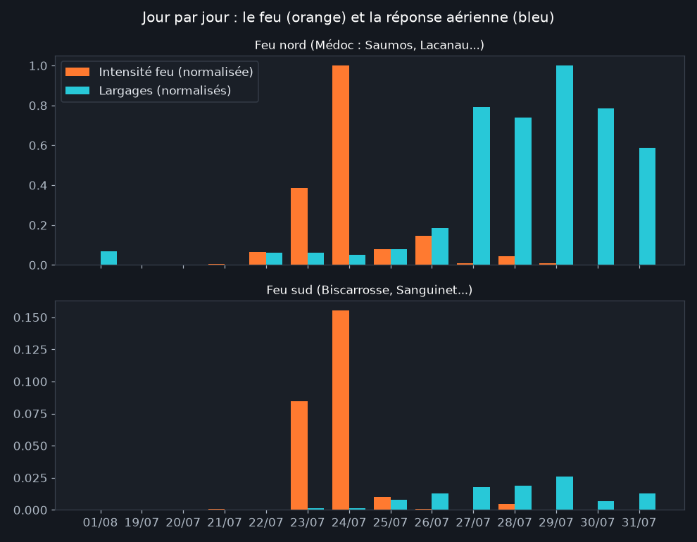
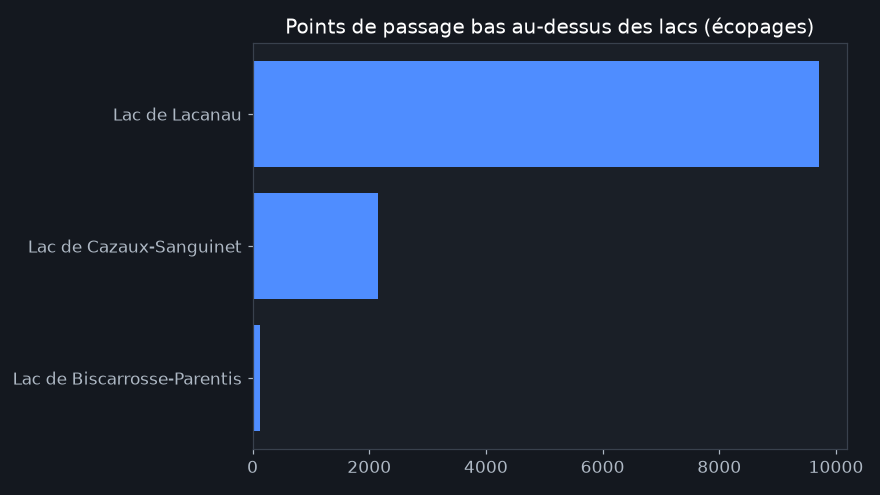
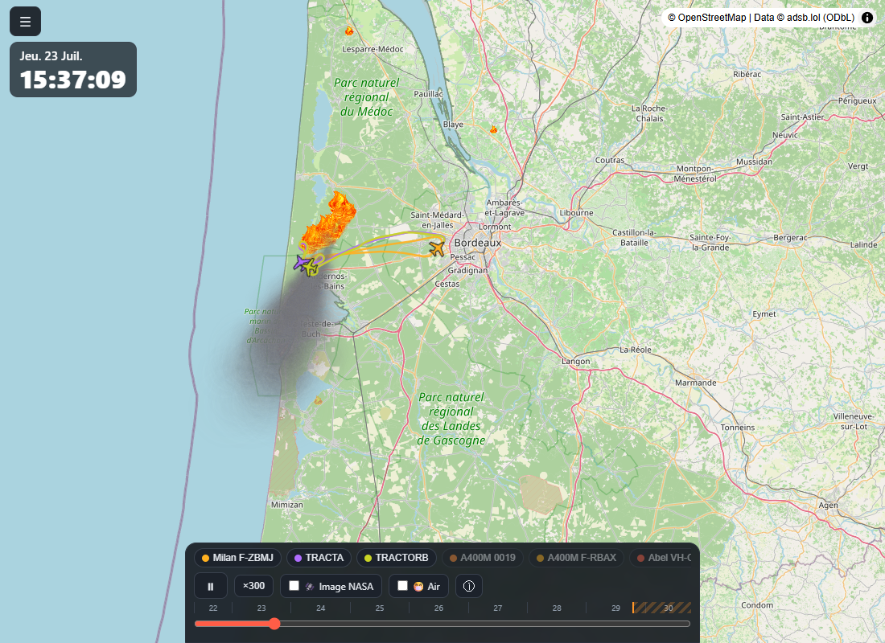

Des zones ont-elles été privilégiées par les largages ?
Publié le 31 juillet 2026 · Mis à jour le 1er août 2026
Analyse des données de Fire Tracker · feux de Gironde et des Landes, 22-29 juillet 2026 · données ouvertes (trajectoires ADS-B, détections satellites NASA) · chiffres bruts
La question. Pendant huit jours, des dizaines d'avions et d'hélicoptères ont largué eau et retardant sur deux grands incendies. Une question revient souvent : certaines zones ont-elles été privilégiées par les moyens aériens, et d'autres délaissées ? Nous avons croisé 9 650 détections satellites de foyers avec 657 000 positions d'avions en action (vol à moins de 300 mètres du sol, à vitesse d'intervention) sur une grille de cellules de 5 km.
ont reçu des largages 0,45corrélation feu ↔ largages
(cellules de 5 km) 2 lacsont fourni l'essentiel
de l'eau écopée
1. Vue d'ensemble : le feu et la réponse se superposent

Premier constat rassurant : presque aucune zone en feu n'a été ignorée : 92 % des cellules où le satellite a mesuré un feu significatif ont reçu au moins un passage bas d'aéronef. Il n'y a pas de "trou" dans la réponse aérienne.
2. Mais la couverture n'est pas proportionnelle : et c'est voulu

Si les avions arrosaient "au prorata du feu", les barres orange et bleues seraient égales. Or elles ne le sont pas du tout :
- Le cœur de l'incendie (secteur Le Porge) : 57 % du feu, mais 25 % des largages. Une fois la forêt embrasée sur des milliers d'hectares, larguer au centre ne sert plus à rien : on ne peut pas éteindre un brasier de cette taille par les airs.
- Le front est (Andernos → Salaunes → Saumos) : ~17 % du feu, mais près de 60 % des largages. C'est la lisière qui progressait vers les zones habitées et la métropole bordelaise. Secteur Salaunes : moins de 3 % du feu, 12 % des largages : cinq fois plus que sa "part".
En clair : les moyens aériens n'éteignent pas le feu, ils le bordent. La stratégie visible dans les données est celle que décrivent les pompiers : sacrifier le cœur déjà perdu, et concentrer l'eau sur les flancs qui menacent les vies et les habitations. La corrélation modérée (0,45) entre intensité du feu et largages n'est pas un défaut de coordination : c'est la signature d'une stratégie de contention.
3. Jour par jour : la réponse suit le feu avec un temps d'avance sur les fronts

Au nord, l'activité aérienne culmine avec puis après le pic du feu (24-25 juillet) : on noie les lisières pendant que le cœur décroît. Au sud, l'activité mesurée paraît faible : voir l'encadré méthodologique, ce feu a surtout été traité par des moyens peu visibles de nos capteurs.
4. D'où venait l'eau ?

Deux lacs ont servi de "stations-service" : Lacanau pour le feu du Médoc (quelques minutes de rotation seulement) et Cazaux-Sanguinet pour le feu sud. C'est l'atout géographique majeur de ce territoire : des norias ultra-courtes, jusqu'à un largage toutes les 10 minutes par appareil.
À quoi ça ressemblait en vrai

Méthode et limites (à lire avant de citer)
Ce que mesurent vraiment ces chiffres. "Feu" = puissance radiative (FRP) détectée par les satellites VIIRS/MODIS, 6-8 passages par jour, aveugles sous les nuages. "Largage" = position d'aéronef sous 300 m d'altitude à vitesse d'intervention, hors aéroports et hors lacs : c'est un indicateur d'activité, pas un décompte officiel de largages.
Le feu sud (Biscarrosse) est sous-estimé dans nos mesures d'intervention, pour deux raisons : la couverture des récepteurs ADS-B à très basse altitude y est environ 8 fois moins bonne qu'au nord, et une partie du travail y a été faite par des hélicoptères bombardiers d'eau qui n'émettent pas de position publique. Les trajectoires montrent pourtant Canadair, Dash et A400M y descendre à 25-75 m : la zone n'a pas été délaissée, elle est simplement moins bien mesurée.
Analyse reproductible : scripts/analyse_zones.py du
dépôt, données complètes en CSV
dans open-data/. Sources : © adsb.lol contributors (ODbL), NASA FIRMS,
Open-Meteo. Analyse produite avec l'aide de Claude Code.
- 31/07/2026 : première publication.
- 01/08/2026 : recalcul sur l'ensemble des données de production (2,4 millions de lignes, appareils captés automatiquement et journées du 30 juillet au 1er août incluses) ; corrélation et parts sectorielles ajustées.